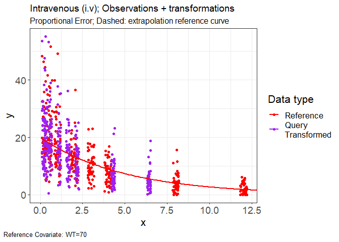
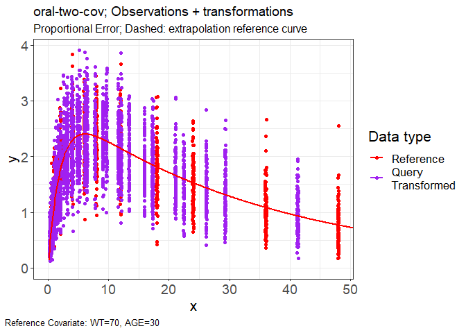

A method for visualization of PMx models.
Vachette builds off previous work done in V2ACHER, providing a method to visualize PKPD analyses which are impacted by covariate effects.
remotes::install_github("certara/vachette")
# Import Example Data
obs.data <- read.csv(system.file(package = "vachette", "examples", "iv-obs.csv"))
typ.data <- read.csv(system.file(package = "vachette", "examples", "iv-typ.csv"))
library(vachette)
vd <-
vachette_data(
obs.data,
typ.data,
covariates = c(WT = 70),
mappings = c(OBS = "DV",
x = "time"),
ref.dosenr = 1,
model.name = "Intravenous (i.v)"
)## `EVID` column found in obs.data, creating `dosenr` column in data for corresponding ref.dosenr value
## `EVID` column found in typ.data, creating `dosenr` column in data for corresponding ref.dosenr value
vd <- vd |>
apply_transformations()
p.vachette(vd)
obs.data <- read.csv(system.file(package = "vachette", "examples", "oral-two-cov-obs.csv"))
typ.data <- read.csv(system.file(package = "vachette", "examples", "oral-two-cov-typ.csv"))
vd <-
vachette_data(
obs.data,
typ.data,
covariates = c(WT = 70, AGE = 30),
mappings = c(OBS = "DV",
x = "time"),
ref.dosenr = 1,
model.name = "oral-two-cov"
)## `EVID` column found in obs.data, creating `dosenr` column in data for corresponding ref.dosenr value
## `EVID` column found in typ.data, creating `dosenr` column in data for corresponding ref.dosenr value
vd <- vd |>
apply_transformations(window = 23,
window.d1.refine = 7,
window.d2.refine = 5)
p.vachette(vd)